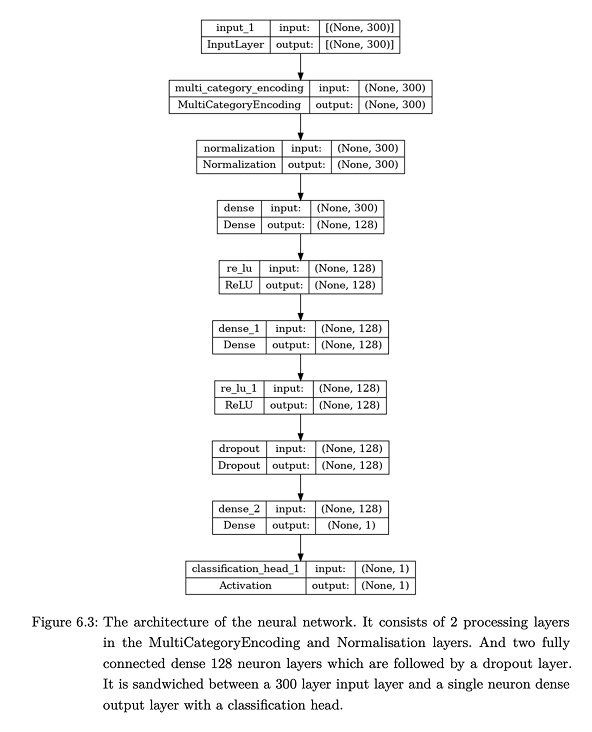
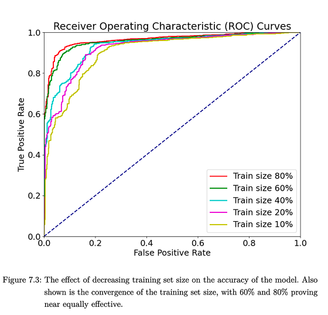

BEng Thesis: Landmine Detection with Deep Learning
University of Edinburgh / 2024

The Problem
Landmine detection using ground penetrating radar (GPR) is promising but limited by a lack of real world training data. Collecting labelled GPR scans over actual minefields is dangerous, slow, and expensive. Without enough training data, machine learning models can't learn to generalise well.
The Approach
I trained a neural network entirely on synthetic GPR data and tested whether it could detect landmines in real radar scans it had never seen before. The synthetic data came from FDTD numerical simulations. I built a digital twin of a GSSI 2 GHz antenna and modelled PMN landmine targets buried at various depths in different soil conditions.
The model architecture is a convolutional neural network that takes raw GPR B scan images as input and classifies them as containing a landmine or not. I trained it on thousands of simulated scans and then validated it against real GPR data collected with physical hardware.
Results
The model achieved 80% accuracy on individual real world scans. When I applied a weighted averaging method across multiple scans of the same area, accuracy reached 100%. This showed that synthetic training data can bridge the gap to real world performance, which is a meaningful result for humanitarian demining applications.
This thesis won the IMechE Best Student Award.

